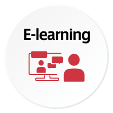
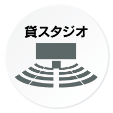
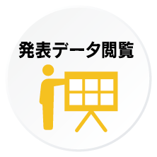
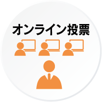
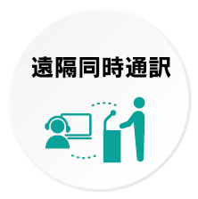
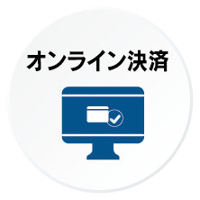
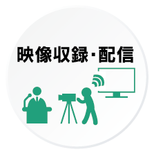
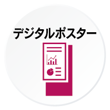
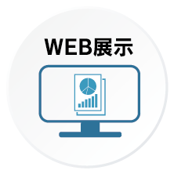

オンラインだからできる
最適の会議運営サービスをご提案開催
社会のIT化、リモート化が拡がる中、場所・時間・収容人数などに制限されることなく、
コンベンションをオンラインで開催できるサービスです。
国内外より、多くの方々が参加され易い環境を提供でき、各会議やイベントのご要望に応じ、現地開催では難しい機能等を組み合わせて最適のソリューションをご提案致します。
インターグループの強み！
- 弊社附属の通訳者養成機関「インタースクール」の人的資源を活用し、海外講演者との配信に向けての英語での事前の連絡調整や説明等にも万全の体制で対応させていただきます。
また、オンライン開催での遠隔同時通訳（RSI）にも、ビデオ会議システムの仕様やネットワーク環境に応じて最適のソリューションで対応させて頂けます。 - インターグループ東京/名古屋/大阪、各拠点内に、配信スタジオを設置しております。
弊社の配信スタジオをご利用いただくことで、通常の会場費よりも比較的安価で提供することができます。もちろん、オンライン配信・講演者の投影資料のサポート・収録等が可能です。 - 配信スタジオ事前視察もお引き受け致します。
なおその際に、実際の運営イメージを直接ご説明させていただくことも可能ですので、お気軽にお尋ねください。
配信型式について
ライブ配信
～集合会議さながらの臨場感～
- 
- 
- 
- 
- 
- 
- 
- オンタイムで視聴者の反応が確認できます。
- Q&Aやチャット機能（オプション）にて質疑応答も可能です。
- 事前に講演者とのリハーサルや接続テストを行うことでより安定した配信を提供します。
- 参加登録・視聴履歴・Q&A等・参加証発行・E-learning等、多様なオプション機能もご利用頂けます。
オンデマンド配信
～場所・時間を問わず閲覧できる～
- 
- 
- 閲覧期間を設けてることにより、視聴者が時間、場祖を問わずご利用頂けます。
- より多くの方々に発信する場合にも有効です。
- 講演資料やデータ等の配信データは、事前に作成・収集・収録するため、当日の配信トラブルを最小限に抑えることも可能です。
ハイブリット配信
～現地会場の臨場感ある会議運営をオンラインでも同時に体感～
- 現地、自宅、オフィス等々、最適の環境からご参加頂けます。
- 現地会場では感染症対策を徹底し、安心安全にご参加いただける環境を整えます。
お問い合わせ/見積依頼
お客様のご要望や運営イメージをヒアリングさせていただいた後、
プランや御見積書等をご提案します。
ぜひ、以下フォームまたはお電話にてお気軽にお問い合わせください！